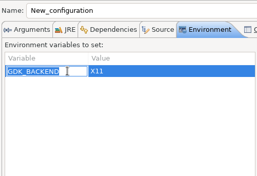
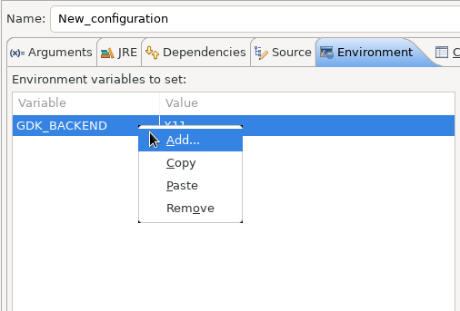

Views, Dialogs and Toolbar


Debug
In the Environment Tab of the Launch Configuration dialog, you can now double-click on an environment variable name or value and start editing it directly from the table.

Right-clicking on the environment variable table now opens a context menu, allowing for quick addition, removal, copying, and pasting of environment variables.